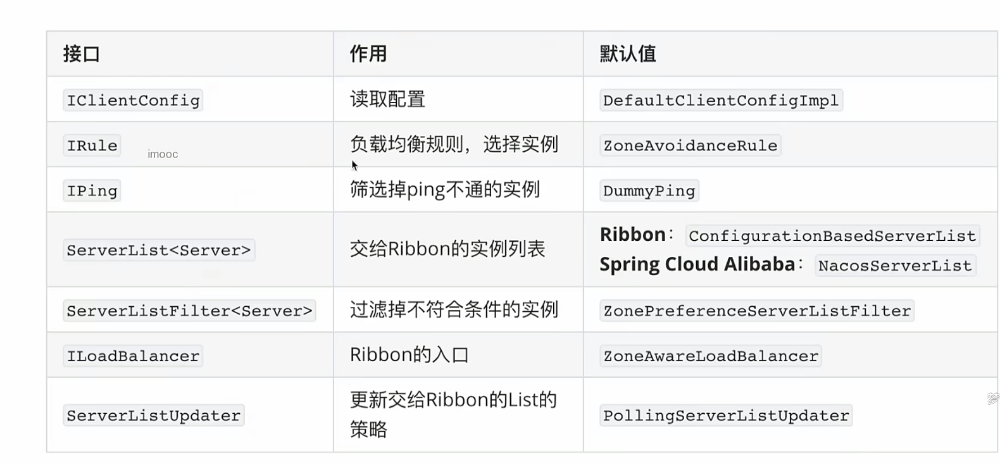
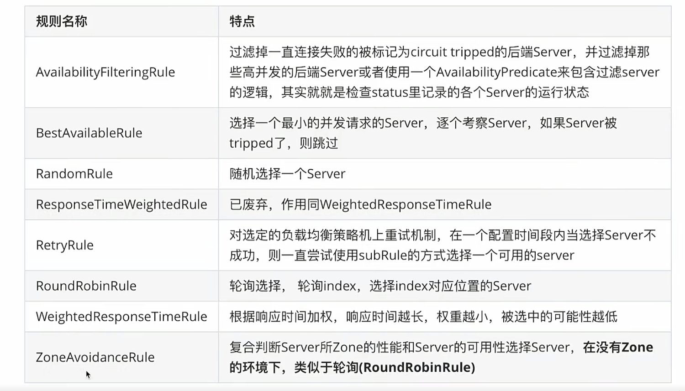
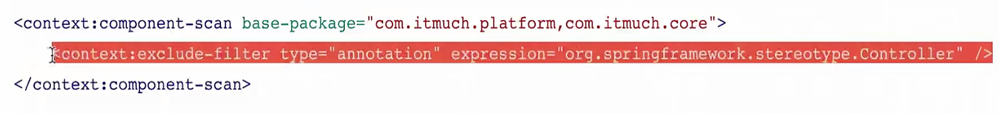
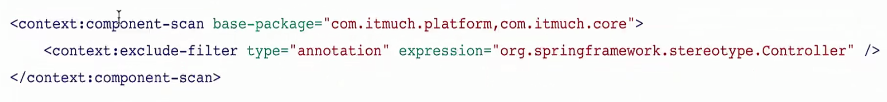
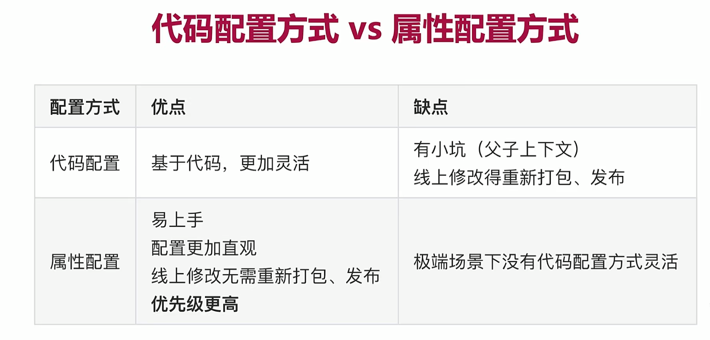
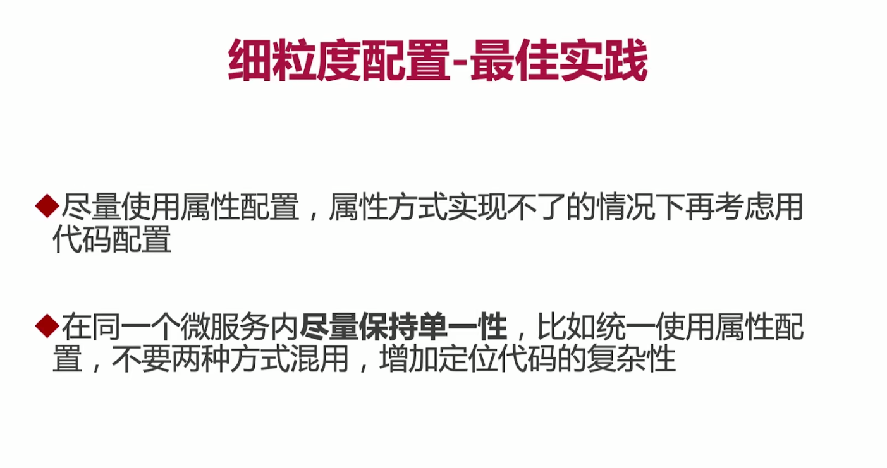

引入注册中心Nacos
Cloud提供了一个类DiscoveryClient作为注册发现中心的客户端，用于Client端对注册中心服务的查询，导入包之后直接Autowired即可，注意是Cloud提供的，即使不使用nacos，使用其他的注册中心，这个Api同样可用。
常用的方法有getInstances(String 服务名即serviceId) 和 getServices(String serviceId)，查询实例信息
指定Nacos元数据除了可以在控制台console上直接编写键值对以外，还可以在application.yml中配置metadata属性，如果version ： v1或者在console上version = v1都随意，只是代表元信息。
手写负载均衡（随机法）
JUC包下的ThreadLocalRandom可以在多线程并发情况下生成随机数，减少竞争提升性能，生成方法如下：
1 | int randomNum = ThreadLocalRandom.current().nextInt(max = (服务量list的size())); |
拿到该服务的地址发送http通信请求即可。
Ribben核心组成

Ribben自带负载均衡策略

可以看到Ribben是没有基于权重的负载均衡规则的，我们想要使用0-1权重范围的负载均衡需要借助nacos构建，至于为什么没有。是因为要符合Cloud规范。
(重点) Ribben的负载均衡策略的细粒度和全局配置
配置方式一共有两种，Java代码配置和配置文件属性配置
后者最为简单，直接修改以下属性为对应的策略类的类路径即可，如
1 | <clientName>.ribbon.NFLoadBalanceRuleClassName : com......... |
对于Java代码的全局配置，需要把JavaConfig中的@RibbonClient注解修改为@RibbonClients(不再配置name属性，仅配置defaultConfiguration)
关于Java配置方式
（1）在Application层级下创建JavaConfig，确定具体规则
（2）细粒度的负载均衡规则配置：在SpringApplication启动类目录之外创建JavaConfig类.
（3）然后该类添加@RibbonClient(name = “服务名来确定细粒度”,configuration = Application层级内创建的具体规则类.class)注解。
为什么要这样设置？？？？为什么要将最终的JavaConfig放到外面，这样不就扫描不到了吗？
原因是Spring的内部规则导致，我们在传统SSM框架中一般会用XML方式分别引入Spring和SpringMVC的依赖，并且会确定好其范围，Spring如下，不扫描Controller

而MVC的恰好相反：

这里又涉及到@ComponentScan，他会扫描Component并构建对应的规则树，如果两个拥有独立树的组件没有被分开单独处理，那么树交叉（上下文重叠）就有可能会产生各种错误，所以不要让Spring扫描到Ribbon
这里假如把Ribbon类放入扫描范围内会怎么样呢？
结果是会将细粒度配置变为全局配置，但是建议直接使用全局配置，因为由于树（上下文）重叠产生的效果强烈不推荐。
最后总结下配置方式对比：


PS：因为配置规则IRule只是Ribbon的其中一个配置项（组成部分）也就是均衡规则，其他的配置项同样都可以使用JavaConfig（@Bean返回对应配置项的实现类即可，注意大配置项反映到代码中是一个接口）和属性配置（有对应的属性名）
开启Ribbon饥饿加载
因为Ribbon第一次对某一个服务发起请求时，会创建对应服务名的RibbonClient，所以默认是懒加载，如果我们要开启饥饿加载，如下：
逗号分隔多个服务名

实现Ribbon调用同集群实例优先（容灾）
同样是要实现负载均衡算法IRule接口的子抽象类，为什么是抽象类实现接口？
抽象类当然能够实现接口，意义如下：一般来说我们使用普通类来实现接口，这个普通类就必须实现接口中所有的方法，这样的结果就是普通类中就需要实现多余的方法，造成代码冗余。 但是如果我们使用的是抽象类来实现接口，那么就可以只实现接口中的部分方法，并且当其他类继承这个抽象类时，仍然可以实现接口中有但抽象类并未实现的抽象方法。
重写抽象类的choose方法的负载均衡规则，思路在下：
首先找到指定服务的所有实例 A
然后过滤出同一个Cluster的所有实例 B
如果B是空，那么用A，然后用权重算法，最终selectOne
获取请求的微服务名称，因为目标Uri是我们发送的网址（中间是服务名），所以获取时需要通过一个类(LoadBalancer)，该类没有getName方法，所以一般要强转乘BaseLoadBalancer，获取当前的name之后我们要传给后面的select查询。
如下：
获取所有实例还有NacosDiscoveryProperties.namingServiceInstance()方法去获取服务的所有API得到NamingService对象,注意获取这个对象是固定的，即：
1 | NamingService service = NacosDiscoveryProperties.namingServiceInstance();//固定获取 |
PS：前面因为Cluster是自己用配置文件指定的，所以我们还是要借助Nacos的Api为NacosDiscoveryProperties.getClusterName()，获取集群名称是为了和后面获取的所有instance逐个比较，如果请求集群和目标实例集群相同，那么才能过滤出所需要的同一cluster的目标Client服务。
所以我们可以利用服务的属性来进行合理的筛选，来实现特定服务的调度，比如使用元空间属性，获取这个键值对存到Map中，如果kv相等那么我们可以实现同版本调度，比如v1仅调用v1，v2仅调用v2版本的服务因为基于权重的算法是位于Nacos之内是固定的传入所有的实例列表，所以我们自创这个集群调度算法，需要过滤出来LIst
之后，自己去引用Nacos算法，所以一般会自己创建一个类，然后去继承Nacos去调这个目标方法，把list参数传入重写方法即可。
nameSpace的作用很容易理解，就是实现了命名空间的隔离，不可跨空间调用
If you like this blog or find it useful for you, you are welcome to comment on it. You are also welcome to share this blog, so that more people can participate in it. If the images used in the blog infringe your copyright, please contact the author to delete them. Thank you !